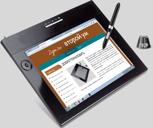

Добро пожаловать
Вашему вниманию представлена электронная энциклопедия самых полезных и хороших советов. Второй ум - это открытый источник информации для людей, студентов, путешественников, журналистов, детей, автором которого может стать каждый желающий. Энциклопедия постоянно наполняется лучшими советами. Мы будем стараться собирать различные рекомендации для пользователей от приготовления необычных блюд в виде марципановых десертов из миндаля с агар-агаром до обычной подготовки к межпространственному перемещению галактических предметов.
Здесь вы найдете секреты для
выживания в диких условиях. Самоделки для научных опытов и
экспериментов. Приспособления для быстрого ремонта, выполнения
работ, автоматизации рутинных задач. У нас Вы найдёте ответы
на многие вопросы. Сайт лайфхак с наработками и ноу-хау во
всем.